ecothreads
Bridging the gap between new and secondhand markets with increased focus on sustainability
BRAnding
development
EcoThreads is a sustainable fashion app that merges new and secondhand clothing into one cohesive shopping experience—something most fashion platforms don’t currently offer. Alongside marketplace functionality, the app educates users about the environmental impact of different fibers, using an algorithm that promotes more balanced, sustainable purchasing habits.
Sustainable fashion often feels inaccessible, confusing, or limited in scope. Existing platforms typically separate new and secondhand markets, and users are left to do their own research on garment sustainability. We set out to create a more intuitive, centralized platform—one that makes shopping sustainably not only easier, but more engaging and informative.
COLLABORATORS:
Morgan Brown
Georgia Weeden
The Challenge
The market keeps new and secondhand items separate. Users do not know or understand the sustainability aspect of the garments they buy, causing confusion. The most sustainable kind of fabric changes based on user purchases, leaving buyers uninformed even if they are well-meaning.
brand identity
I led the branding for EcoThreads with a clear goal: make sustainability feel friendly and fresh—not preachy or overly “green.” Instead of defaulting to traditional earth tones, I curated a palette that included a deep emerald jewel tone, a modern neon yellow-green, and soft pinks and blues. These colors gave us a full spectrum to work with, allowing both high-contrast, bold moments and more airy, textile-inspired ones.
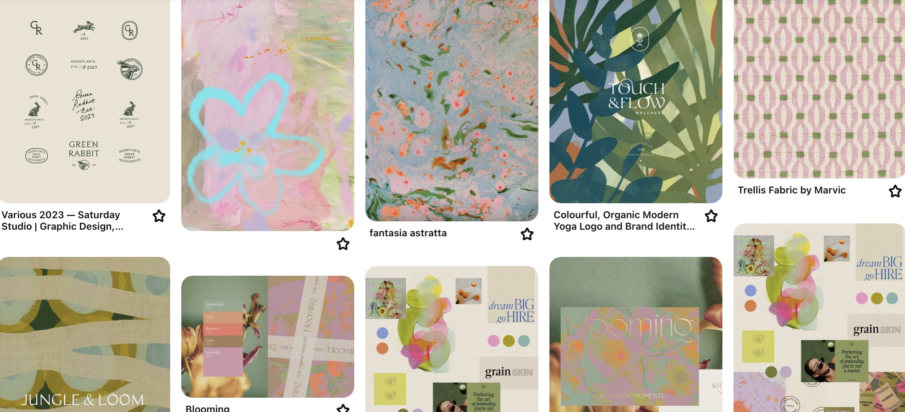
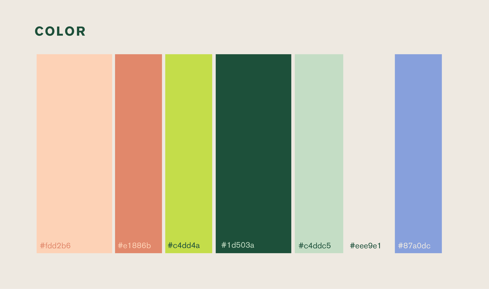
typography
For typography, I chose a condensed serif for headers—light and elegant—paired with Akzidenz Grotesk for body copy and subheads. The width contrast between the two fonts brought visual interest and kept the overall identity legible and modern.
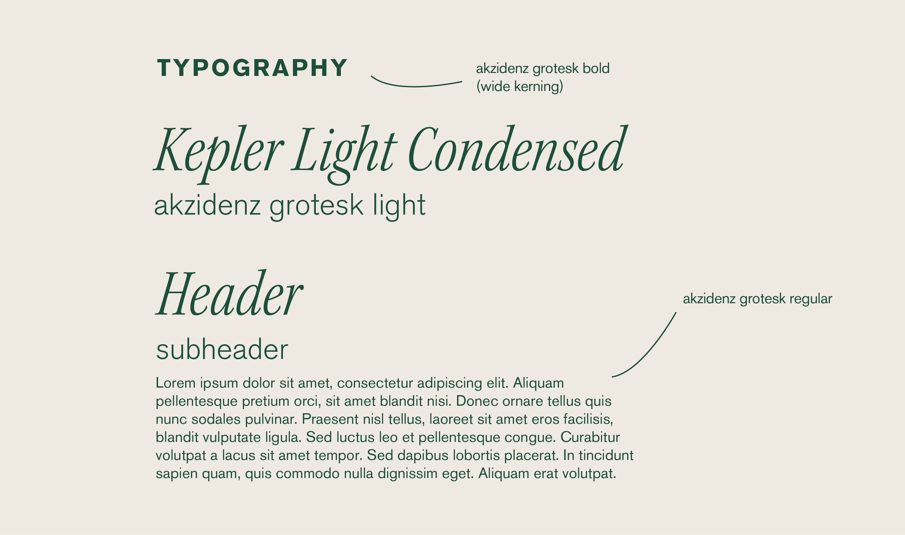
mark development
Logo development went through several iterations. My early concept used a heart icon to tie emotional appeal to sustainability, but it felt visually disconnected from the type. I pivoted to a custom hanger icon, which paired much better with our refined wordmark. Playing with line weights and stroke styles, I landed on a mark that felt light but intentional—just like the brand itself.
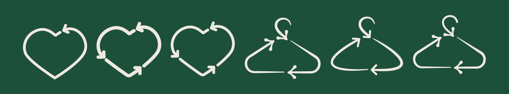
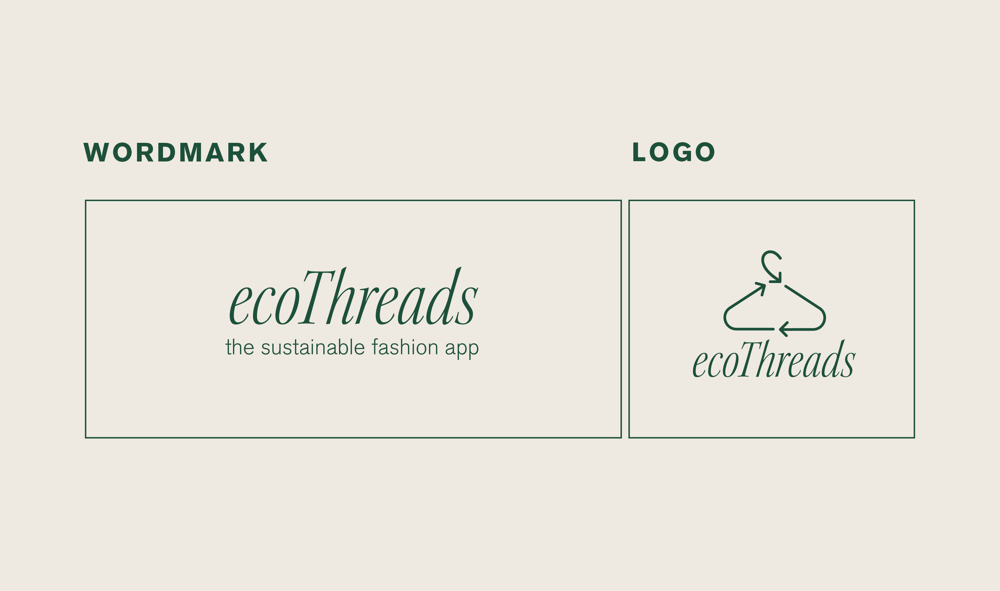
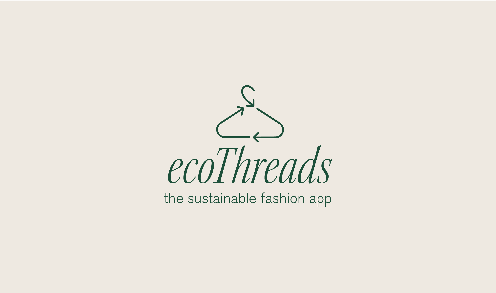
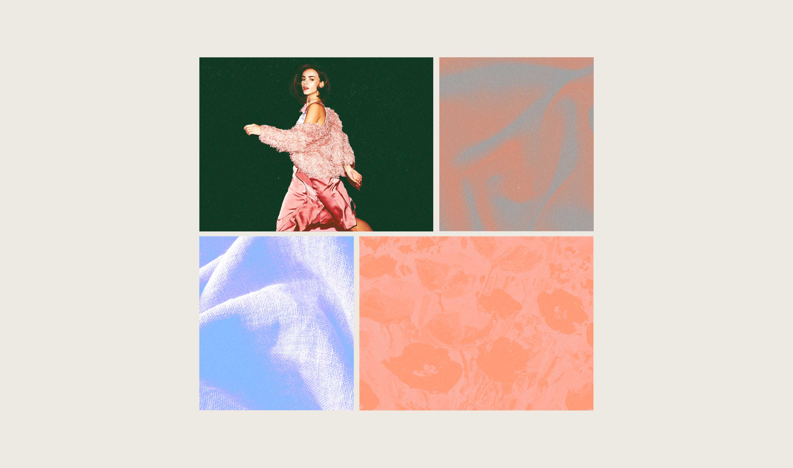
fiber algorithm
During research, I discovered that no single fiber is perfectly sustainable across its entire lifecycle. Instead, sustainability improves when we maintain a healthy balance of different fiber types. To support this idea, I developed a custom algorithm that helps guide purchasing behavior within the app.
View the code on GitHub here.
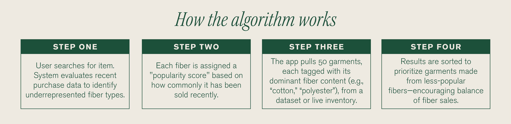
interface design
Morgan Brown led the app’s interface design, prototyping a clean and intuitive UI that appeals to younger users—especially college students who often feel priced out of sustainable fashion. Her goal was to blend new and secondhand clothing into a seamless marketplace, while eliminating the need for extra research on product sustainability. A key feature: the app recommends similar secondhand alternatives when browsing new items.
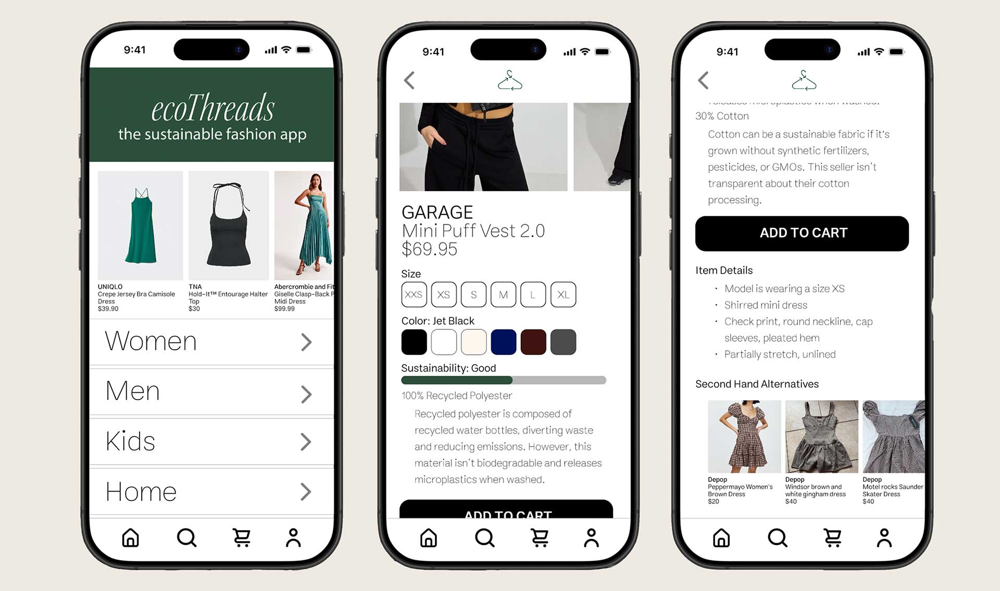
return center
Georgia Weeden extended the brand’s sustainable mission into the physical world by designing an in-person return center in Revit. This space allows users to return online purchases without generating additional shipping waste.
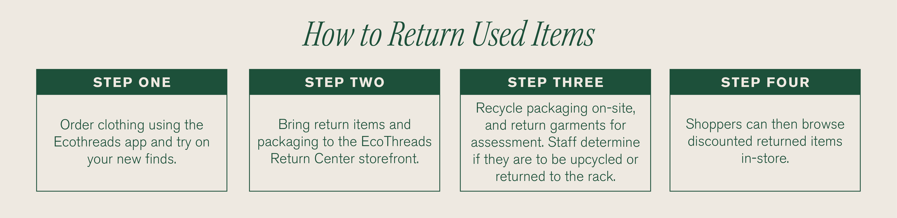
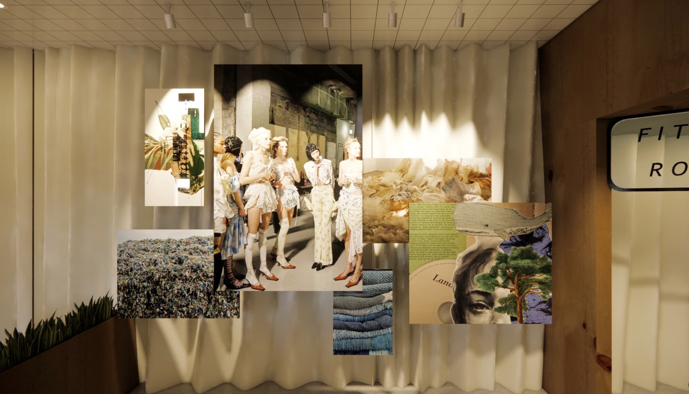
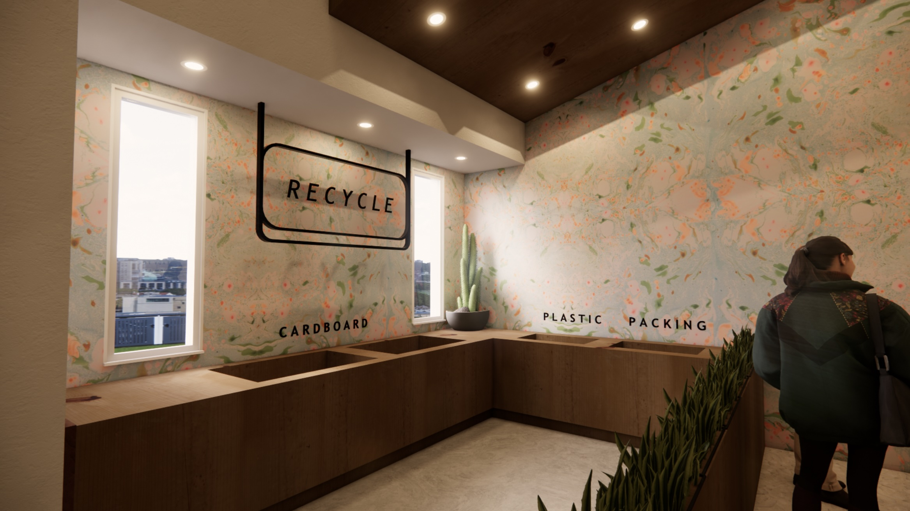
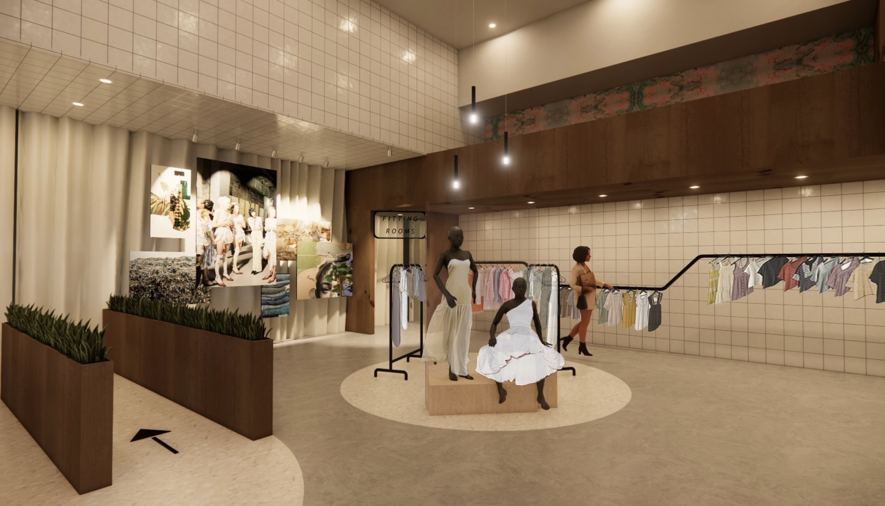